# Load required packages
library(palmerpenguins) # has the data for penguins and they are cute
library(car) # For Levene's test and Type III SS
library(emmeans) # For estimated marginal means
library(broom) # For tidying model outputs
library(patchwork) # For combining plots
library(tidyverse)
# Set theme for plots
theme_set(theme_light(base_size = 12))Lecture 12 - Factorial ANOVA of Penguin Mass
Lecture 12: Factorial ANOVA
The set up and data overview
p_df <- penguins %>%
select(spp = species, sex, body_mass_g) %>%
rename(mass_g = body_mass_g)
head(p_df)# A tibble: 6 × 3
spp sex mass_g
<fct> <fct> <int>
1 Adelie male 3750
2 Adelie female 3800
3 Adelie female 3250
4 Adelie <NA> NA
5 Adelie female 3450
6 Adelie male 3650# Check for missing values
p_df %>%
summarise_all(~sum(is.na(.))) # A tibble: 1 × 3
spp sex mass_g
<int> <int> <int>
1 0 11 2# Load the penguin data
p_df <- p_df %>%
filter(!is.na(mass_g),
!is.na(sex),
!is.na(spp))
# View the first few rows
head(p_df)# A tibble: 6 × 3
spp sex mass_g
<fct> <fct> <int>
1 Adelie male 3750
2 Adelie female 3800
3 Adelie female 3250
4 Adelie female 3450
5 Adelie male 3650
6 Adelie female 3625# Summary statistics
p_df %>%
group_by(spp, sex) %>%
summarise(
mean_mass = mean(mass_g, na.rm=TRUE),
sd_mass = sd(mass_g, na.rm=TRUE),
n = sum(!is.na(mass_g)),
se_mass = sd_mass/n^.5,
.groups = 'drop'
)# A tibble: 6 × 6
spp sex mean_mass sd_mass n se_mass
<fct> <fct> <dbl> <dbl> <int> <dbl>
1 Adelie female 3369. 269. 73 31.5
2 Adelie male 4043. 347. 73 40.6
3 Chinstrap female 3527. 285. 34 48.9
4 Chinstrap male 3939. 362. 34 62.1
5 Gentoo female 4680. 282. 58 37.0
6 Gentoo male 5485. 313. 61 40.1Make a balanced dataframe where samples are all the same
# Check original sample sizes
original_n <- p_df %>%
count(spp, sex) %>%
arrange(spp, sex)
p_df %>%
count(spp, sex) %>%
pivot_wider(names_from = sex,
values_from = n,
values_fill = 0) # A tibble: 3 × 3
spp female male
<fct> <int> <int>
1 Adelie 73 73
2 Chinstrap 34 34
3 Gentoo 58 61# Find minimum sample size
min_n <- min(original_n$n)
min_n[1] 34# Create balanced dataset
set.seed(123) # for reproducibility
pb_df <- p_df %>%
group_by(spp, sex) %>%
sample_n(min_n) %>%
ungroup()
# Verify balanced design
balanced_n <- pb_df %>%
count(spp, sex) %>%
pivot_wider(names_from = sex,
values_from = n,
values_fill = 0)
balanced_n# A tibble: 3 × 3
spp female male
<fct> <int> <int>
1 Adelie 34 34
2 Chinstrap 34 34
3 Gentoo 34 34balanced dataframe
# Calculate group means and SDs
summary_df <- pb_df %>%
group_by(spp, sex) %>%
summarise(
n = sum(!is.na(mass_g)),
mean_mass = mean(mass_g),
sd_mass = sd(mass_g),
se_mass = sd_mass/sqrt(n),
.groups = 'drop'
) %>%
arrange(spp, sex)
print(summary_df)# A tibble: 6 × 6
spp sex n mean_mass sd_mass se_mass
<fct> <fct> <int> <dbl> <dbl> <dbl>
1 Adelie female 34 3335. 260. 44.5
2 Adelie male 34 4049. 318. 54.5
3 Chinstrap female 34 3527. 285. 48.9
4 Chinstrap male 34 3939. 362. 62.1
5 Gentoo female 34 4681. 309. 53.0
6 Gentoo male 34 5525 274. 47.0This is the balanced Factorial ANOVA
ANOVA Assumptions
In the factorial ANOVA, we need to check several assumptions after fitting the model:
- Independence of observations
- Normality of residuals
- Homogeneity of variances
- Homoscedascidity
Fit the model
# Set contrasts for Type III SS
options(contrasts = c("contr.sum", "contr.poly"))
# Fit the factorial ANOVA using linear model (lm) instead of aov
pb_model <- lm(mass_g ~ spp * sex, data = pb_df)
# View the model summary to see coefficients, standard errors, etc.
summary(pb_model)
Call:
lm(formula = mass_g ~ spp * sex, data = pb_df)
Residuals:
Min 1Q Median 3Q Max
-827.21 -178.13 6.25 175.00 861.03
Coefficients:
Estimate Std. Error t value Pr(>|t|)
(Intercept) 4175.86 21.23 196.727 < 2e-16 ***
spp1 -484.31 30.02 -16.134 < 2e-16 ***
spp2 -442.77 30.02 -14.750 < 2e-16 ***
sex1 -328.31 21.23 -15.467 < 2e-16 ***
spp1:sex1 -28.68 30.02 -0.955 0.341
spp2:sex1 122.43 30.02 4.078 6.57e-05 ***
---
Signif. codes: 0 '***' 0.001 '**' 0.01 '*' 0.05 '.' 0.1 ' ' 1
Residual standard error: 303.2 on 198 degrees of freedom
Multiple R-squared: 0.8596, Adjusted R-squared: 0.856
F-statistic: 242.4 on 5 and 198 DF, p-value: < 2.2e-16Anova(pb_model, type = 3)Anova Table (Type III tests)
Response: mass_g
Sum Sq Df F value Pr(>F)
(Intercept) 3557308900 1 38701.5271 < 2.2e-16 ***
spp 87725999 2 477.2049 < 2.2e-16 ***
sex 21988483 1 239.2224 < 2.2e-16 ***
spp:sex 1672776 2 9.0994 0.0001657 ***
Residuals 18199467 198
---
Signif. codes: 0 '***' 0.001 '**' 0.01 '*' 0.05 '.' 0.1 ' ' 1Lecture 12: Factorial ANOVA
ASSUMPTIONS
# Create diagnostic plots
par(mfrow = c(2, 2))
plot(pb_model)
par(mfrow = c(1, 1))Check for Normality of Residuals
# Extract residuals from the model
pb_resid_df <- augment(pb_model)
# Create Q-Q plot of residuals
ggplot(pb_resid_df, aes(sample = .resid)) +
stat_qq() +
stat_qq_line() +
labs(title = "Q-Q Plot of Residuals",
x = "Theoretical Quantiles",
y = "Sample Quantiles")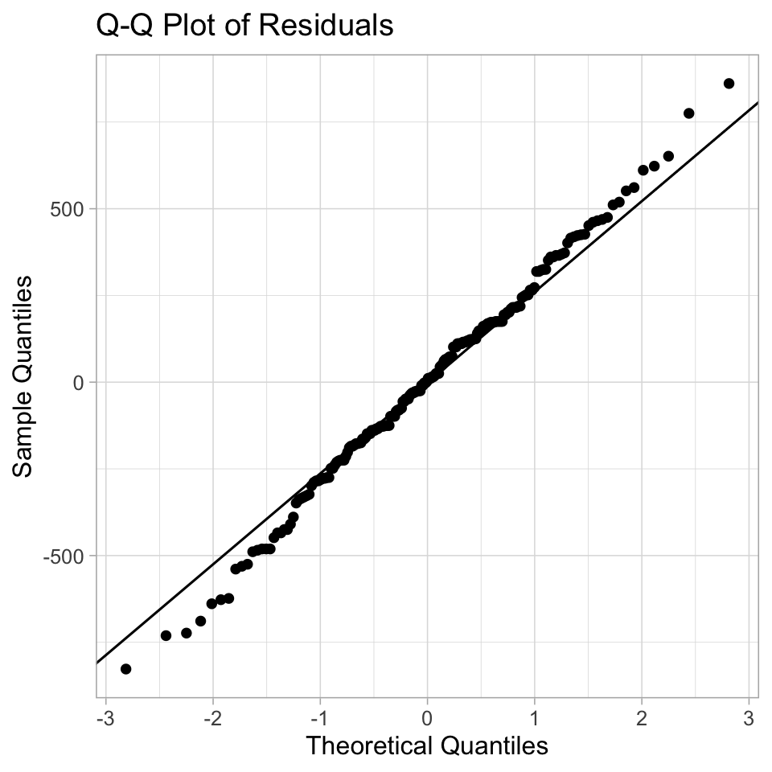
Lecture 12: Factorial ANOVA
Check for Normality of Residuals
# Histogram of residuals
ggplot(pb_resid_df, aes(x = .resid)) +
geom_histogram(bins = 15, fill = "snow", color = "black") +
labs(title = "Histogram of Residuals",
x = "Residuals",
y = "Count")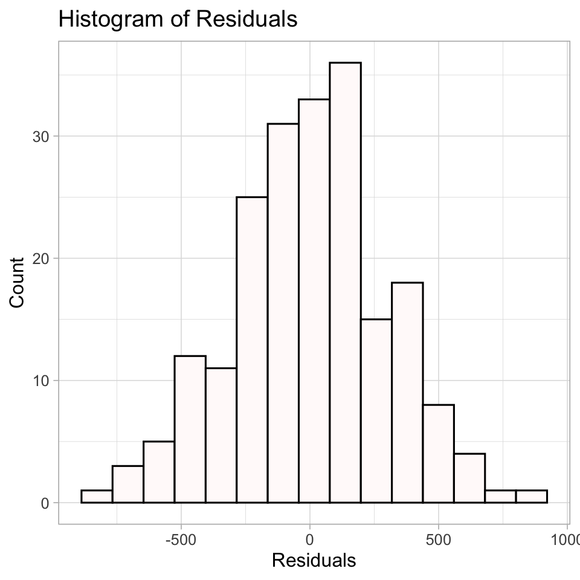
Lecture 12: Factorial ANOVA
Check for Normality of Residuals
# Shapiro-Wilk test for normality
shapiro.test(pb_model$residuals)
Shapiro-Wilk normality test
data: pb_model$residuals
W = 0.99612, p-value = 0.8886# or
shapiro.test(residuals(pb_model))
Shapiro-Wilk normality test
data: residuals(pb_model)
W = 0.99612, p-value = 0.8886Lecture 12: Factorial ANOVA
# Levene's test for homogeneity of variances
leveneTest(mass_g ~ spp * sex, data = pb_df)Levene's Test for Homogeneity of Variance (center = median)
Df F value Pr(>F)
group 5 0.7841 0.5622
198 Lecture 12: Factorial ANOVA
Check for homogeneity of variances
# Residuals vs. fitted values plot
ggplot(pb_resid_df, aes(x = .fitted, y = .resid)) +
geom_point() +
geom_hline(yintercept = 0, linetype = "dashed", color = "red") +
labs(title = "Residuals vs Fitted Values",
x = "Fitted Values",
y = "Residuals")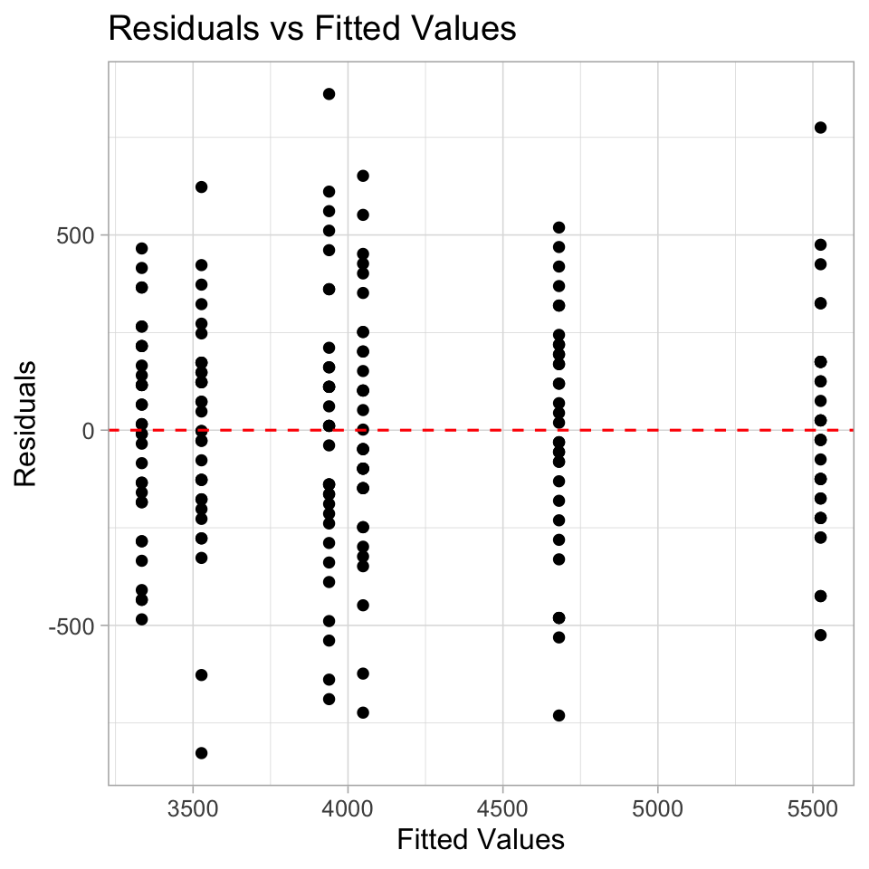
Lecture 12: Factorial ANOVA
Check for homogeneity of variances
# Add residuals to original data for plotting
pb_resid_group_df <- pb_df %>%
mutate(residuals = residuals(pb_model))
# Residuals by group
ggplot(pb_resid_group_df, aes(x = interaction(spp, sex), y = residuals)) +
geom_boxplot() +
labs(title = "Residuals by Group",
x = "Species:Sex Combination",
y = "Residuals") +
theme(axis.text.x = element_text(angle = 45, hjust = 1))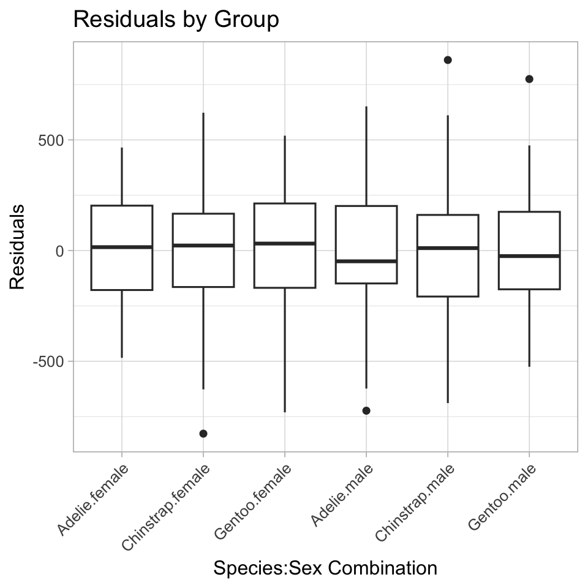
Lecture 12: Factorial ANOVA
Estimated Marginal Means and Effects
# Get estimated marginal means from the linear model
# Main effect of species
sppb_emm <- emmeans(pb_model, ~ spp)
sppb_emm spp emmean SE df lower.CL upper.CL
Adelie 3692 36.8 198 3619 3764
Chinstrap 3733 36.8 198 3661 3806
Gentoo 5103 36.8 198 5030 5175
Results are averaged over the levels of: sex
Confidence level used: 0.95 pairs(sppb_emm) contrast estimate SE df t.ratio p.value
Adelie - Chinstrap -41.5 52 198 -0.799 0.7041
Adelie - Gentoo -1411.4 52 198 -27.145 <0.0001
Chinstrap - Gentoo -1369.9 52 198 -26.346 <0.0001
Results are averaged over the levels of: sex
P value adjustment: tukey method for comparing a family of 3 estimates Estimated Marginal Means and Effects
plot(sppb_emm)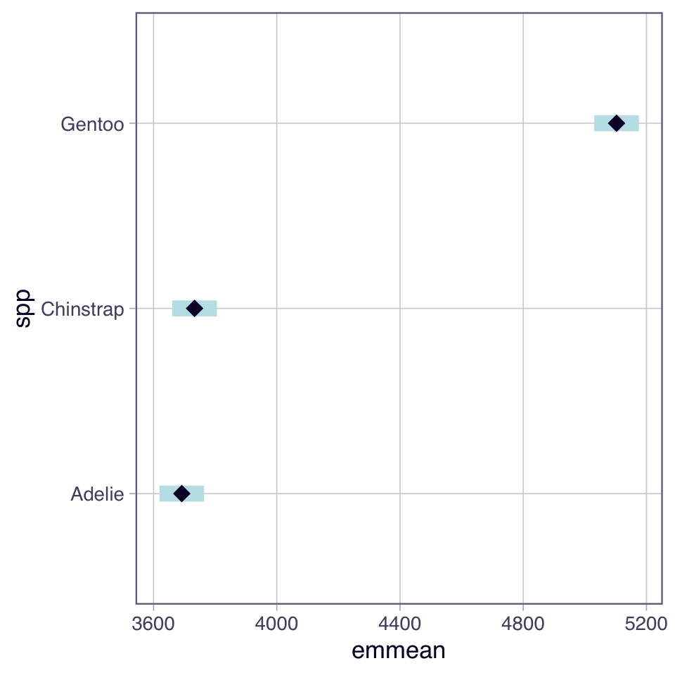
Lecture 12: Factorial ANOVA
Estimated Marginal Means and Effects
# Main effect of sex
sexb_emm <- emmeans(pb_model, ~ sex)
sexb_emm sex emmean SE df lower.CL upper.CL
female 3848 30 198 3788 3907
male 4504 30 198 4445 4563
Results are averaged over the levels of: spp
Confidence level used: 0.95 pairs(sexb_emm) contrast estimate SE df t.ratio p.value
female - male -657 42.5 198 -15.467 <0.0001
Results are averaged over the levels of: spp Lecture 12: Factorial ANOVA
Estimated Marginal Means and Effects
# Main effect of sex
plot(sexb_emm)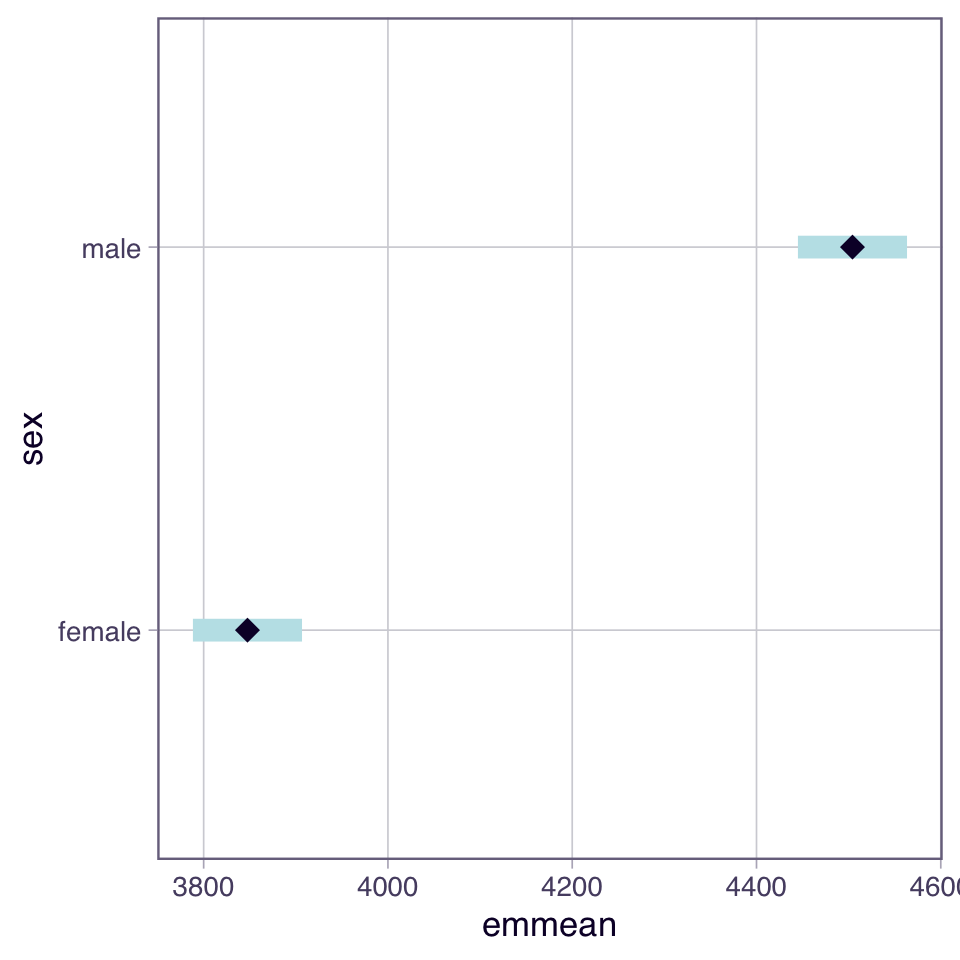
Lecture 12: Factorial ANOVA
Estimated Marginal Means and Effects
# Interaction effects
interactionb_emm <- emmeans(pb_model, ~ spp * sex)
interactionb_emm spp sex emmean SE df lower.CL upper.CL
Adelie female 3335 52 198 3232 3437
Chinstrap female 3527 52 198 3425 3630
Gentoo female 4681 52 198 4578 4783
Adelie male 4049 52 198 3946 4151
Chinstrap male 3939 52 198 3836 4042
Gentoo male 5525 52 198 5422 5628
Confidence level used: 0.95 # Compare to raw means
pb_df %>%
group_by(spp, sex) %>%
summarise(
raw_mean = mean(mass_g),
.groups = 'drop'
) %>%
pivot_wider(names_from = sex, values_from = raw_mean)# A tibble: 3 × 3
spp female male
<fct> <dbl> <dbl>
1 Adelie 3335. 4049.
2 Chinstrap 3527. 3939.
3 Gentoo 4681. 5525 pairs(interactionb_emm) contrast estimate SE df t.ratio p.value
Adelie female - Chinstrap female -193 73.5 198 -2.620 0.0973
Adelie female - Gentoo female -1346 73.5 198 -18.310 <0.0001
Adelie female - Adelie male -714 73.5 198 -9.710 <0.0001
Adelie female - Chinstrap male -604 73.5 198 -8.220 <0.0001
Adelie female - Gentoo male -2190 73.5 198 -29.789 <0.0001
Chinstrap female - Gentoo female -1154 73.5 198 -15.690 <0.0001
Chinstrap female - Adelie male -521 73.5 198 -7.090 <0.0001
Chinstrap female - Chinstrap male -412 73.5 198 -5.600 <0.0001
Chinstrap female - Gentoo male -1998 73.5 198 -27.169 <0.0001
Gentoo female - Adelie male 632 73.5 198 8.600 <0.0001
Gentoo female - Chinstrap male 742 73.5 198 10.090 <0.0001
Gentoo female - Gentoo male -844 73.5 198 -11.480 <0.0001
Adelie male - Chinstrap male 110 73.5 198 1.490 0.6711
Adelie male - Gentoo male -1476 73.5 198 -20.079 <0.0001
Chinstrap male - Gentoo male -1586 73.5 198 -21.569 <0.0001
P value adjustment: tukey method for comparing a family of 6 estimates # Get compact letter display (cld)
cldb_interaction <- multcomp::cld(interactionb_emm,
Letters = letters,
adjust = "sidak")
# Display the results
# print(cld_interaction)
cldb_df <- as.data.frame(cldb_interaction) %>%
arrange(spp, sex) # Sort by estimated marginal mean
# View the results with means and grouping letters
print(cldb_df) spp sex emmean SE df lower.CL upper.CL .group
Adelie female 3334.559 51.99448 198 3196.378 3472.740 a
Adelie male 4048.529 51.99448 198 3910.349 4186.710 b
Chinstrap female 3527.206 51.99448 198 3389.025 3665.387 a
Chinstrap male 3938.971 51.99448 198 3800.790 4077.151 b
Gentoo female 4680.882 51.99448 198 4542.702 4819.063 c
Gentoo male 5525.000 51.99448 198 5386.819 5663.181 d
Confidence level used: 0.95
Conf-level adjustment: sidak method for 6 estimates
P value adjustment: sidak method for 15 tests
significance level used: alpha = 0.05
NOTE: If two or more means share the same grouping symbol,
then we cannot show them to be different.
But we also did not show them to be the same. Lecture 12: Factorial ANOVA
Estimated Marginal Means and Effects
# Interaction plot with confidence intervals
emmip(pb_model, sex ~ spp, CIs = TRUE) +
labs(title = "Interaction Plot",
x = "Species",
y = "Body Mass (g)")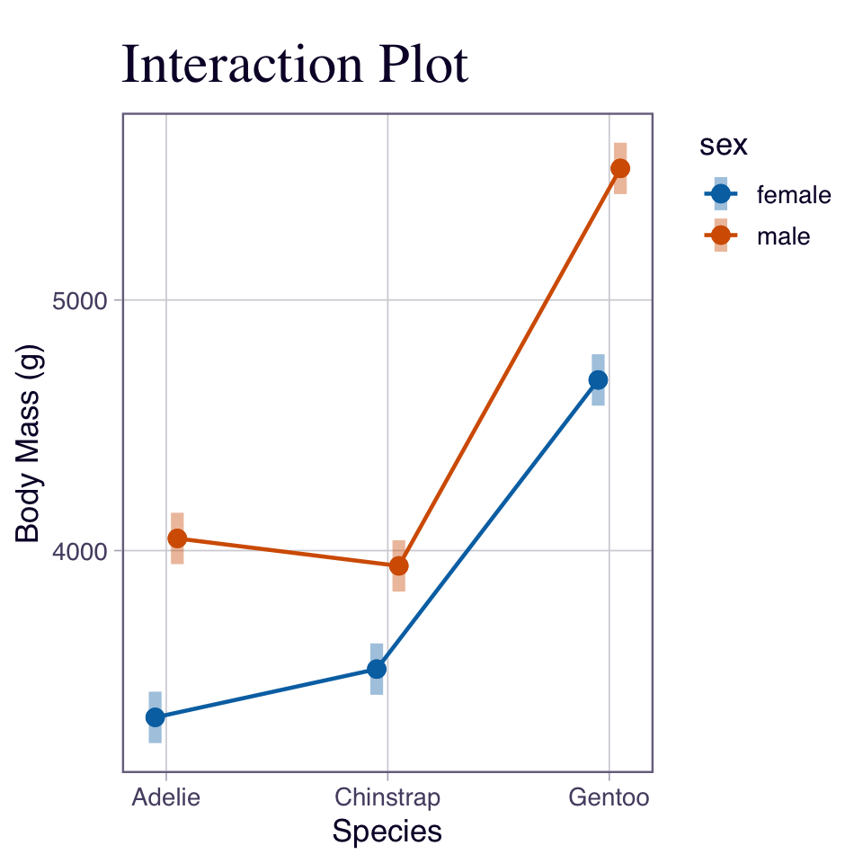
Lecture 12: Factorial ANOVA
Estimated Marginal Means and Effects
# Convert emmeans object to data frame
interactionb_df <- as.data.frame(interactionb_emm)
interactionb_df spp sex emmean SE df lower.CL upper.CL
Adelie female 3334.559 51.99448 198 3232.025 3437.093
Chinstrap female 3527.206 51.99448 198 3424.672 3629.740
Gentoo female 4680.882 51.99448 198 4578.348 4783.416
Adelie male 4048.529 51.99448 198 3945.995 4151.063
Chinstrap male 3938.971 51.99448 198 3836.437 4041.505
Gentoo male 5525.000 51.99448 198 5422.466 5627.534
Confidence level used: 0.95 Lecture 12: Factorial ANOVA
This is a plot you might produce for publication
# Publication-quality plot with model predictions
# Convert emmeans object to data frame
pubb_interaction_df <- as.data.frame(interactionb_emm)
# Create enhanced plot with model predictions
pubb_plot <- ggplot(pubb_interaction_df, aes(x = spp, y = emmean,
color = sex, group = sex)) +
# Add lines connecting the means
geom_line(linewidth = 1,
position = position_dodge(width = 0.2)) +
# Add points at each mean
geom_point(size = 3,
position = position_dodge(width = 0.2)) +
# Add error bars showing standard error
geom_errorbar(aes(ymin = emmean - SE, ymax = emmean + SE),
width = 0.2,
position = position_dodge(width = 0.2)) +
# Simple labels
labs(
x = "Species",
y = "Body Mass (g)",
color = "Sex"
) +
theme_light()
pubb_plot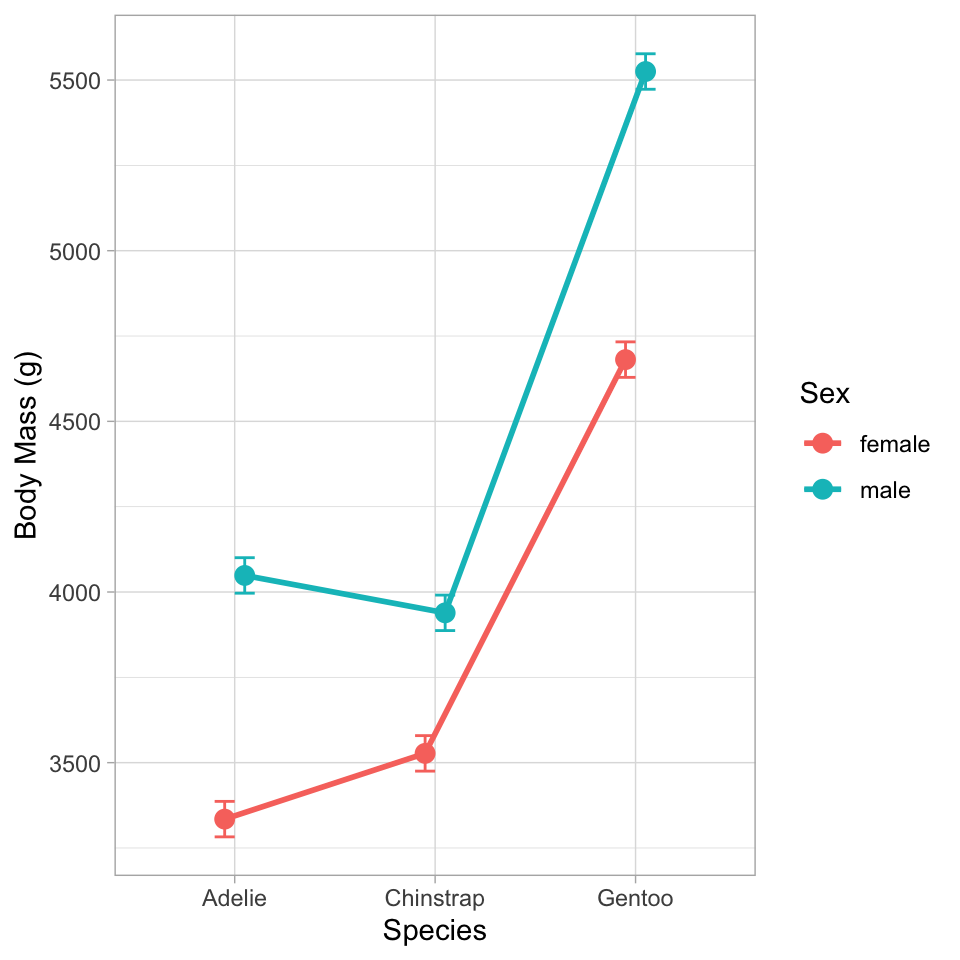
Lecture 12: Results Interpretation for Linear Model Approach
The factorial ANOVA was conducted using a linear model approach, which provides additional insights beyond the traditional ANOVA table.
Key findings from the linear model analysis:
Interaction effect: The interaction between species and sex was [significant/not significant] (F = [value from output], df = 2, [residual df], p = [value from output]), indicating that the difference between males and females [varies/is consistent] across species.
Model fit: The overall model explains approximately [value]% of the variance in body mass (R-squared = [value]), indicating a good fit to the data.
Lecture 12: Understanding Sums of Squares Types
When we have balanced designs (equal sample sizes) or want to test different hypotheses, we can use different types of sums of squares. Let’s compare Type I, Type II, and Type III.
Type I Sums of Squares (Sequential)
# Type I SS - order matters!
# This is the default in R's anova() function
type1b_anova <- anova(pb_model)
type1b_anovaAnalysis of Variance Table
Response: mass_g
Df Sum Sq Mean Sq F value Pr(>F)
spp 2 87725999 43862999 477.2049 < 2.2e-16 ***
sex 1 21988483 21988483 239.2224 < 2.2e-16 ***
spp:sex 2 1672776 836388 9.0994 0.0001657 ***
Residuals 198 18199467 91916
---
Signif. codes: 0 '***' 0.001 '**' 0.01 '*' 0.05 '.' 0.1 ' ' 1Type I SS tests effects in the order they appear in the model. Each term is adjusted for terms that appear before it in the model.
Type II Sums of Squares
# Type II SS - each main effect adjusted for other main effects
# but not for interactions
type2b_anova <- Anova(pb_model, type = 2)
type2b_anovaAnova Table (Type II tests)
Response: mass_g
Sum Sq Df F value Pr(>F)
spp 87725999 2 477.2049 < 2.2e-16 ***
sex 21988483 1 239.2224 < 2.2e-16 ***
spp:sex 1672776 2 9.0994 0.0001657 ***
Residuals 18199467 198
---
Signif. codes: 0 '***' 0.001 '**' 0.01 '*' 0.05 '.' 0.1 ' ' 1Type II SS tests each main effect after adjusting for other main effects, but not for the interaction. This is appropriate when interactions are not significant.
Type III Sums of Squares
# Type III SS - each effect adjusted for all other effects
# This is what we used earlier
type3b_anova <- Anova(pb_model, type = 3)
type3b_anovaAnova Table (Type III tests)
Response: mass_g
Sum Sq Df F value Pr(>F)
(Intercept) 3557308900 1 38701.5271 < 2.2e-16 ***
spp 87725999 2 477.2049 < 2.2e-16 ***
sex 21988483 1 239.2224 < 2.2e-16 ***
spp:sex 1672776 2 9.0994 0.0001657 ***
Residuals 18199467 198
---
Signif. codes: 0 '***' 0.001 '**' 0.01 '*' 0.05 '.' 0.1 ' ' 1Type III SS tests each effect after adjusting for all other effects in the model. This is the most conservative approach and is commonly used in unbalanced designs.
Comparing the Three Types
# Create a comparison table of F-values
ssb_comparison_df <- data.frame(
Effect = c("Species", "Sex", "Species:Sex"),
Typeb_I_F = round(type1b_anova$`F value`[1:3], 2),
Typeb_II_F = round(type2b_anova$`F value`[2:4], 2),
Typeb_III_F = round(type3b_anova$`F value`[2:4], 2)
)
ssb_comparison_df Effect Typeb_I_F Typeb_II_F Typeb_III_F
1 Species 477.20 239.22 477.20
2 Sex 239.22 9.10 239.22
3 Species:Sex 9.10 NA 9.10# Create a comparison table of p-values
pb_comparison_df <- data.frame(
Effect = c("Species", "Sex", "Species:Sex"),
Typeb_I_p = round(type1b_anova$`Pr(>F)`[1:3], 4),
Typeb_II_p = round(type2b_anova$`Pr(>F)`[2:4], 4),
Typeb_III_p = round(type3b_anova$`Pr(>F)`[2:4], 4)
)
pb_comparison_df Effect Typeb_I_p Typeb_II_p Typeb_III_p
1 Species 0e+00 0e+00 0e+00
2 Sex 0e+00 2e-04 0e+00
3 Species:Sex 2e-04 NA 2e-04When Does It Matter?
The choice of SS type matters most when:
- Unbalanced designs: When sample sizes differ across groups
- Correlated predictors: When predictors are not orthogonal
- Interactions present: When there are significant interactions
For balanced designs (equal sample sizes in all cells), all three types give the same results for main effects.
This is the unbalanced Factorial ANOVA
We will work through the exact same data but when it was unbalanced to see the effect that balanced and unbalanced have
Lecture 12: Factorial ANOVA
ANOVA Assumptions
In the factorial ANOVA, we need to check several assumptions after fitting the model:
- Independence of observations
- Normality of residuals
- Homogeneity of variances
Fit the model
# Fit the factorial ANOVA using linear model (lm) instead of aov
pu_model <- lm(mass_g ~ spp * sex, data = p_df)
# View the model summary to see coefficients, standard errors, etc.
summary(pu_model)
Call:
lm(formula = mass_g ~ spp * sex, data = p_df)
Residuals:
Min 1Q Median 3Q Max
-827.21 -213.97 11.03 206.51 861.03
Coefficients:
Estimate Std. Error t value Pr(>|t|)
(Intercept) 4173.85 17.85 233.799 < 2e-16 ***
spp1 -467.68 23.18 -20.177 < 2e-16 ***
spp2 -440.76 28.07 -15.702 < 2e-16 ***
sex1 -315.25 17.85 -17.659 < 2e-16 ***
spp1:sex1 -22.08 23.18 -0.952 0.341589
spp2:sex1 109.37 28.07 3.896 0.000118 ***
---
Signif. codes: 0 '***' 0.001 '**' 0.01 '*' 0.05 '.' 0.1 ' ' 1
Residual standard error: 309.4 on 327 degrees of freedom
Multiple R-squared: 0.8546, Adjusted R-squared: 0.8524
F-statistic: 384.3 on 5 and 327 DF, p-value: < 2.2e-16Anova(pu_model, type = 3)Anova Table (Type III tests)
Response: mass_g
Sum Sq Df F value Pr(>F)
(Intercept) 5232595969 1 54661.828 < 2.2e-16 ***
spp 143001222 2 746.924 < 2.2e-16 ***
sex 29851220 1 311.838 < 2.2e-16 ***
spp:sex 1676557 2 8.757 0.0001973 ***
Residuals 31302628 327
---
Signif. codes: 0 '***' 0.001 '**' 0.01 '*' 0.05 '.' 0.1 ' ' 1Lecture 12: Factorial ANOVA
ASSUMPTIONS
# Create diagnostic plots
par(mfrow = c(2, 2))
plot(pu_model)
par(mfrow = c(1, 1))Check for Normality of Residuals
# Extract residuals from the model
pu_resid_df <- augment(pu_model)
# Create Q-Q plot of residuals
ggplot(pu_resid_df, aes(sample = .resid)) +
stat_qq() +
stat_qq_line() +
labs(title = "Q-Q Plot of Residuals",
x = "Theoretical Quantiles",
y = "Sample Quantiles")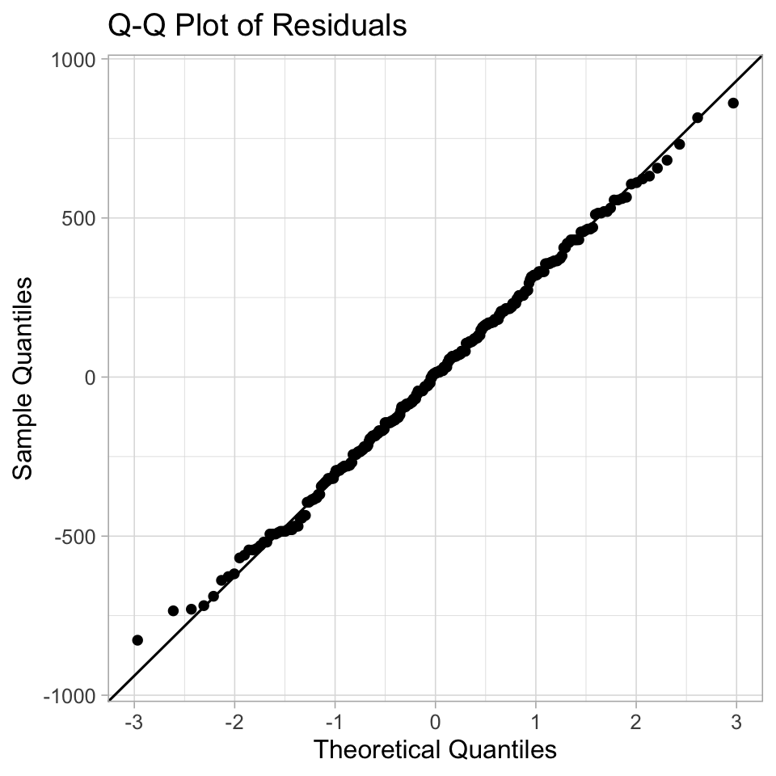
Lecture 12: Factorial ANOVA
Check for Normality of Residuals
# Histogram of residuals
ggplot(pu_resid_df, aes(x = .resid)) +
geom_histogram(bins = 15, fill = "snow", color = "black") +
labs(title = "Histogram of Residuals",
x = "Residuals",
y = "Count")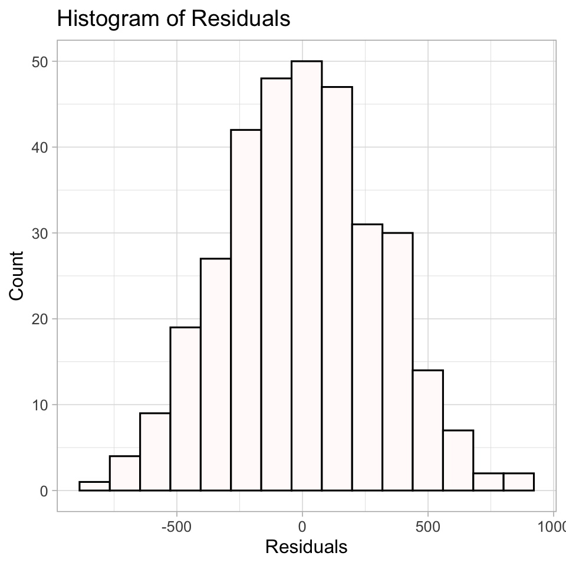
Lecture 12: Factorial ANOVA
Check for Normality of Residuals
# Shapiro-Wilk test for normality
shapiro.test(pu_model$residuals)
Shapiro-Wilk normality test
data: pu_model$residuals
W = 0.99776, p-value = 0.9367Lecture 12: Factorial ANOVA
# Levene's test for homogeneity of variances
leveneTest(mass_g ~ spp * sex, data = p_df)Levene's Test for Homogeneity of Variance (center = median)
Df F value Pr(>F)
group 5 1.3908 0.2272
327 Lecture 12: Factorial ANOVA
Check for homogeneity of variances
# Residuals vs. fitted values plot
ggplot(pu_resid_df, aes(x = .fitted, y = .resid)) +
geom_point() +
geom_hline(yintercept = 0, linetype = "dashed", color = "red") +
labs(title = "Residuals vs Fitted Values",
x = "Fitted Values",
y = "Residuals")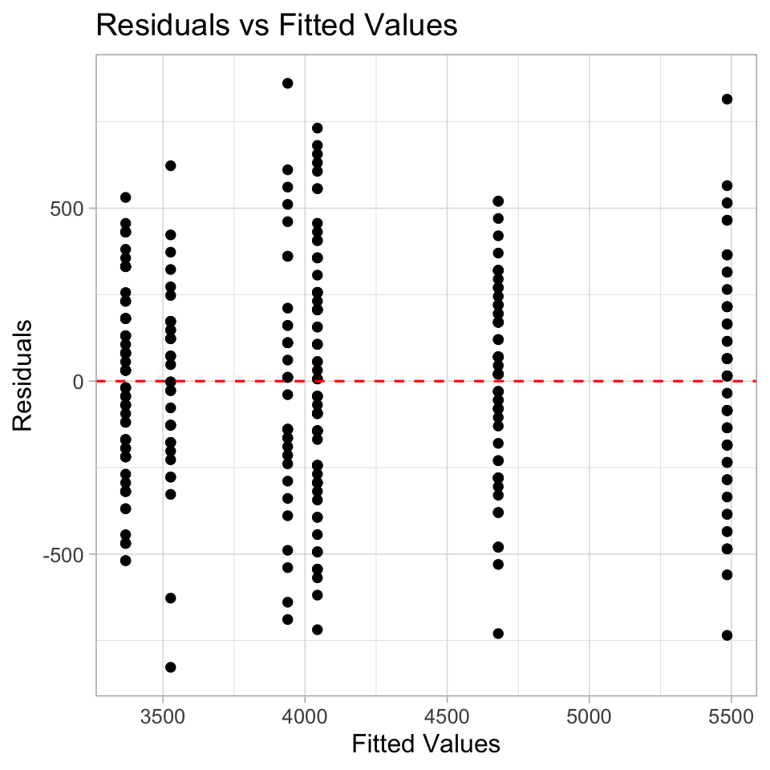
Lecture 12: Factorial ANOVA
Check for homogeneity of variances
# Add residuals to original data for plotting
pu_resid_group_df <- p_df %>%
mutate(residuals = residuals(pu_model))
# Residuals by group
ggplot(pu_resid_group_df, aes(x = interaction(spp, sex), y = residuals)) +
geom_boxplot() +
labs(title = "Residuals by Group",
x = "Species:Sex Combination",
y = "Residuals") +
theme(axis.text.x = element_text(angle = 45, hjust = 1))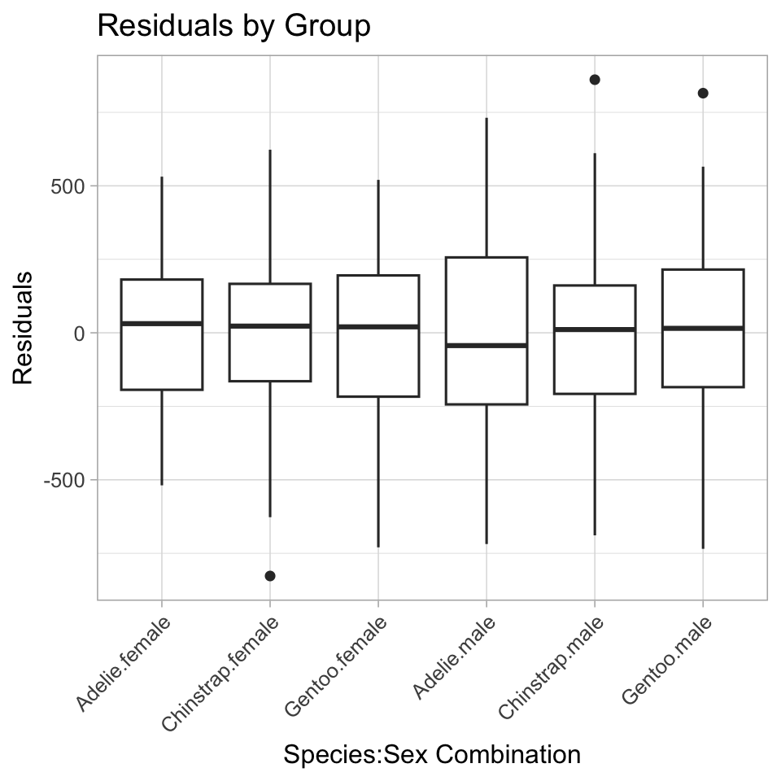
Lecture 12: Factorial ANOVA
Estimated Marginal Means and Effects
# Get estimated marginal means from the linear model
# Main effect of species
sppu_emm <- emmeans(pu_model, ~ spp)
sppu_emm spp emmean SE df lower.CL upper.CL
Adelie 3706 25.6 327 3656 3757
Chinstrap 3733 37.5 327 3659 3807
Gentoo 5082 28.4 327 5026 5138
Results are averaged over the levels of: sex
Confidence level used: 0.95 pairs(sppu_emm) contrast estimate SE df t.ratio p.value
Adelie - Chinstrap -26.9 45.4 327 -0.593 0.8241
Adelie - Gentoo -1376.1 38.2 327 -36.007 <0.0001
Chinstrap - Gentoo -1349.2 47.0 327 -28.682 <0.0001
Results are averaged over the levels of: sex
P value adjustment: tukey method for comparing a family of 3 estimates Estimated Marginal Means and Effects
plot(sppu_emm)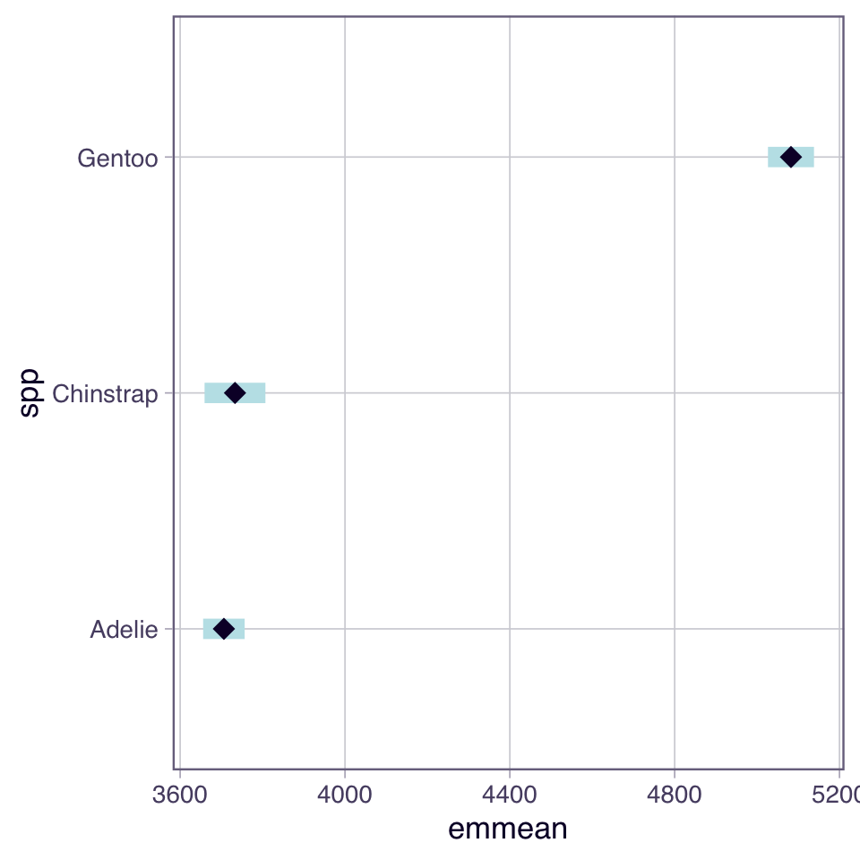
Lecture 12: Factorial ANOVA
Estimated Marginal Means and Effects
# Main effect of sex
sexu_emm <- emmeans(pu_model, ~ sex)
sexu_emm sex emmean SE df lower.CL upper.CL
female 3859 25.3 327 3809 3908
male 4489 25.2 327 4440 4539
Results are averaged over the levels of: spp
Confidence level used: 0.95 pairs(sexu_emm) contrast estimate SE df t.ratio p.value
female - male -631 35.7 327 -17.659 <0.0001
Results are averaged over the levels of: spp Lecture 12: Factorial ANOVA
Estimated Marginal Means and Effects
# Main effect of sex
plot(sexu_emm)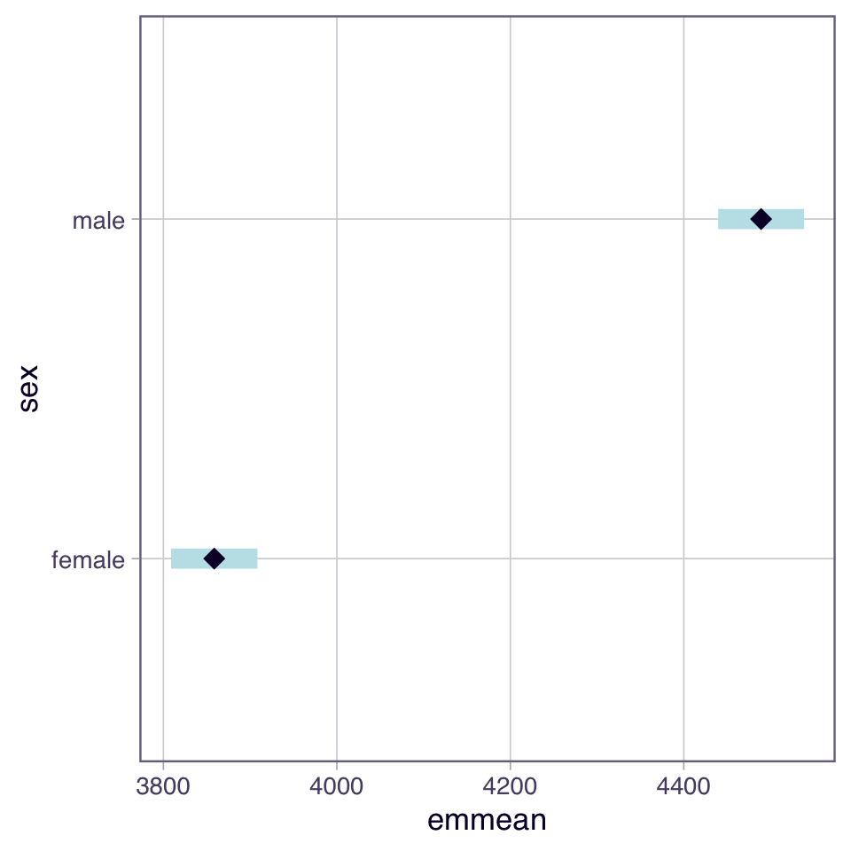
Lecture 12: Factorial ANOVA
Estimated Marginal Means and Effects
# Interaction effects
interactionu_emm <- emmeans(pu_model, ~ spp * sex)
interactionu_emm spp sex emmean SE df lower.CL upper.CL
Adelie female 3369 36.2 327 3298 3440
Chinstrap female 3527 53.1 327 3423 3632
Gentoo female 4680 40.6 327 4600 4760
Adelie male 4043 36.2 327 3972 4115
Chinstrap male 3939 53.1 327 3835 4043
Gentoo male 5485 39.6 327 5407 5563
Confidence level used: 0.95 # ~ species | sex - Gets species means conditional on each sex level separately.
# This is useful for simple effects
# (e.g., "Is there a species effect within males? Within females?")
# but it's not the same as the interaction.# Compare to raw means
p_df %>%
group_by(spp, sex) %>%
summarise(
raw_mean = mean(mass_g),
.groups = 'drop'
) %>%
pivot_wider(names_from = sex, values_from = raw_mean)# A tibble: 3 × 3
spp female male
<fct> <dbl> <dbl>
1 Adelie 3369. 4043.
2 Chinstrap 3527. 3939.
3 Gentoo 4680. 5485.# Get compact letter display (cld)
cldu_interaction <- multcomp::cld(interactionu_emm,
Letters = letters,
adjust = "sidak")
# Display the results
# print(cld_interaction)
cldu_df <- as.data.frame(cldu_interaction) %>%
arrange(spp, sex) # Sort by estimated marginal mean
# View the results with means and grouping letters
print(cldu_df) spp sex emmean SE df lower.CL upper.CL .group
Adelie female 3368.836 36.21222 327 3272.980 3464.692 a
Adelie male 4043.493 36.21222 327 3947.637 4139.349 b
Chinstrap female 3527.206 53.06120 327 3386.749 3667.662 a
Chinstrap male 3938.971 53.06120 327 3798.514 4079.427 b
Gentoo female 4679.741 40.62586 327 4572.202 4787.281 c
Gentoo male 5484.836 39.61427 327 5379.975 5589.698 d
Confidence level used: 0.95
Conf-level adjustment: sidak method for 6 estimates
P value adjustment: sidak method for 15 tests
significance level used: alpha = 0.05
NOTE: If two or more means share the same grouping symbol,
then we cannot show them to be different.
But we also did not show them to be the same. Lecture 12: Factorial ANOVA
Estimated Marginal Means and Effects
# Interaction plot with confidence intervals
emmip(pu_model, sex ~ spp, CIs = TRUE) +
labs(title = "Interaction Plot",
x = "Species",
y = "Body Mass (g)")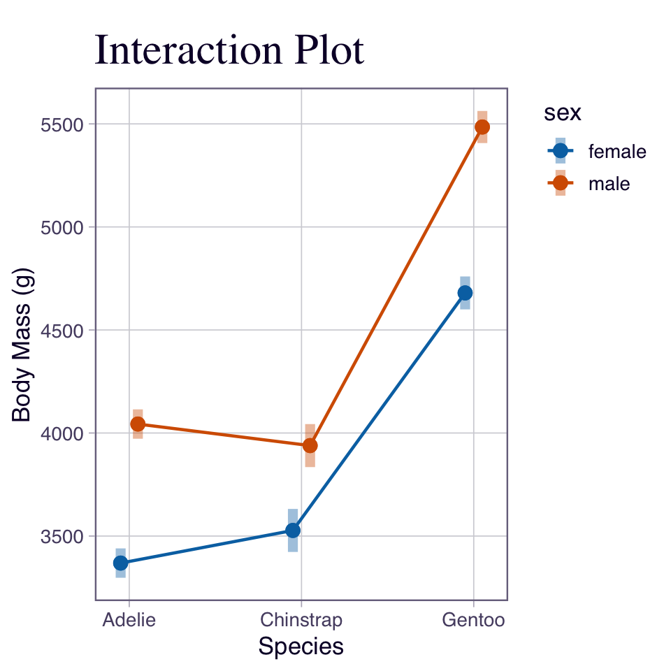
Lecture 12: Factorial ANOVA
Estimated Marginal Means and Effects
# Convert emmeans object to data frame
interactionu_df <- as.data.frame(interactionu_emm)
interactionu_df spp sex emmean SE df lower.CL upper.CL
Adelie female 3368.836 36.21222 327 3297.597 3440.074
Chinstrap female 3527.206 53.06120 327 3422.821 3631.590
Gentoo female 4679.741 40.62586 327 4599.820 4759.662
Adelie male 4043.493 36.21222 327 3972.255 4114.731
Chinstrap male 3938.971 53.06120 327 3834.586 4043.355
Gentoo male 5484.836 39.61427 327 5406.905 5562.767
Confidence level used: 0.95 Lecture 12: Factorial ANOVA
This is a plot you might produce for publication
# Publication-quality plot with model predictions
# Convert emmeans object to data frame
pub_interaction_df <- as.data.frame(interactionu_emm)
# Create enhanced plot with model predictions
pub_plot <- ggplot(pub_interaction_df, aes(x = spp, y = emmean,
color = sex, group = sex)) +
# Add lines connecting the means
geom_line(linewidth = 1,
position = position_dodge(width = 0.2)) +
# Add points at each mean
geom_point(size = 3,
position = position_dodge(width = 0.2)) +
# Add error bars showing standard error
geom_errorbar(aes(ymin = emmean - SE, ymax = emmean + SE),
width = 0.2,
position = position_dodge(width = 0.2)) +
# Simple labels
labs(
x = "Species",
y = "Body Mass (g)",
color = "Sex"
) +
theme_light()
pub_plot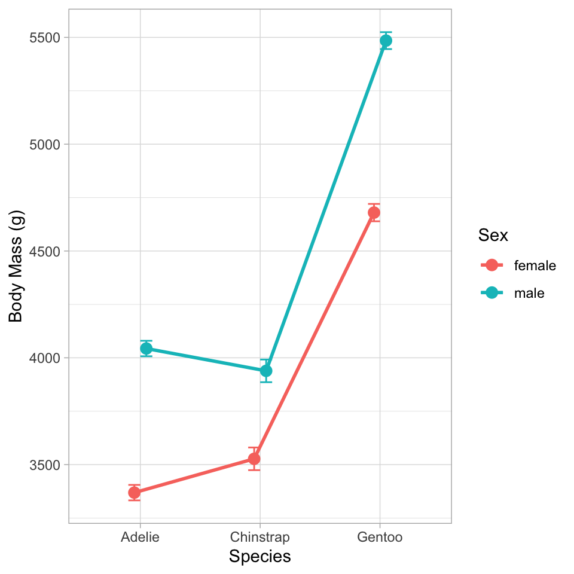
Lecture 12: Results Interpretation for Linear Model Approach
The factorial ANOVA was conducted using a linear model approach, which provides additional insights beyond the traditional ANOVA table.
Key findings from the linear model analysis:
Main effect of species: There was a significant effect of species on body mass (F = [value from output], df = 2, [residual df], p < 0.001). Post-hoc comparisons showed that all three species differed significantly from each other in body mass.
Interaction effect: The interaction between species and sex was [significant/not significant] (F = [value from output], df = 2, [residual df], p = [value from output]), indicating that the difference between males and females [varies/is consistent] across species.
Effect sizes and coefficients: The linear model shows that:
The intercept (reference level: Adelie, Female) has an estimated body mass of approximately [value] grams
Males weigh approximately [value] grams more than females
Chinstrap penguins differ from Adelie by approximately [value] grams
Gentoo penguins differ from Adelie by approximately [value] grams
The interaction terms indicate how the sex difference varies across species
Model fit: The overall model explains approximately [value]% of the variance in body mass (R-squared = [value]), indicating a good fit to the data.
Lecture 12: Understanding Sums of Squares Types
When we have unbalanced designs (unequal sample sizes) or want to test different hypotheses, we can use different types of sums of squares. Let’s compare Type I, Type II, and Type III.
Type I Sums of Squares (Sequential)
# Type I SS - order matters!
# This is the default in R's anova() function
type1_anova <- anova(pu_model)
type1_anovaAnalysis of Variance Table
Response: mass_g
Df Sum Sq Mean Sq F value Pr(>F)
spp 2 145190219 72595110 758.358 < 2.2e-16 ***
sex 1 37090262 37090262 387.460 < 2.2e-16 ***
spp:sex 2 1676557 838278 8.757 0.0001973 ***
Residuals 327 31302628 95727
---
Signif. codes: 0 '***' 0.001 '**' 0.01 '*' 0.05 '.' 0.1 ' ' 1Type I SS tests effects in the order they appear in the model. Each term is adjusted for terms that appear before it in the model.
Type II Sums of Squares
# Type II SS - each main effect adjusted for other main effects
# but not for interactions
type2_anova <- Anova(pu_model, type = 2)
type2_anovaAnova Table (Type II tests)
Response: mass_g
Sum Sq Df F value Pr(>F)
spp 143401584 2 749.016 < 2.2e-16 ***
sex 37090262 1 387.460 < 2.2e-16 ***
spp:sex 1676557 2 8.757 0.0001973 ***
Residuals 31302628 327
---
Signif. codes: 0 '***' 0.001 '**' 0.01 '*' 0.05 '.' 0.1 ' ' 1Type II SS tests each main effect after adjusting for other main effects, but not for the interaction. This is appropriate when interactions are not significant.
Type III Sums of Squares
# Type III SS - each effect adjusted for all other effects
# This is what we used earlier
type3_anova <- Anova(pu_model, type = 3)
type3_anovaAnova Table (Type III tests)
Response: mass_g
Sum Sq Df F value Pr(>F)
(Intercept) 5232595969 1 54661.828 < 2.2e-16 ***
spp 143001222 2 746.924 < 2.2e-16 ***
sex 29851220 1 311.838 < 2.2e-16 ***
spp:sex 1676557 2 8.757 0.0001973 ***
Residuals 31302628 327
---
Signif. codes: 0 '***' 0.001 '**' 0.01 '*' 0.05 '.' 0.1 ' ' 1Type III SS tests each effect after adjusting for all other effects in the model. This is the most conservative approach and is commonly used in unbalanced designs.
Comparing the Three Types
# Create a comparison table of F-values
ss_comparison_df <- data.frame(
Effect = c("Species", "Sex", "Species:Sex"),
Type_I_F = round(type1_anova$`F value`[1:3], 2),
Type_II_F = round(type2_anova$`F value`[2:4], 2),
Type_III_F = round(type3_anova$`F value`[2:4], 2)
)
ss_comparison_df Effect Type_I_F Type_II_F Type_III_F
1 Species 758.36 387.46 746.92
2 Sex 387.46 8.76 311.84
3 Species:Sex 8.76 NA 8.76# Create a comparison table of p-values
p_comparison_df <- data.frame(
Effect = c("Species", "Sex", "Species:Sex"),
Type_I_p = round(type1_anova$`Pr(>F)`[1:3], 4),
Type_II_p = round(type2_anova$`Pr(>F)`[2:4], 4),
Type_III_p = round(type3_anova$`Pr(>F)`[2:4], 4)
)
p_comparison_df Effect Type_I_p Type_II_p Type_III_p
1 Species 0e+00 0e+00 0e+00
2 Sex 0e+00 2e-04 0e+00
3 Species:Sex 2e-04 NA 2e-04When Does It Matter?
The choice of SS type matters most when:
- Unbalanced designs: When sample sizes differ across groups
- Correlated predictors: When predictors are not orthogonal
- Interactions present: When there are significant interactions
For balanced designs (equal sample sizes in all cells), all three types give the same results for main effects.
Lecture 12: Writing the Results for a Scientific Paper
Here’s how you might write up these results using the linear model approach for a scientific paper:
Results
A two-way factorial ANOVA revealed that body mass in penguins was significantly affected by both species (F2,[df] = [F-value], P < 0.001) and sex (F1,[df] = [F-value], P < 0.001). The interaction between species and sex was [significant/not significant] (F2,[df] = [F-value], P = [p-value]). The model explained [value]% of the variance in body mass (adjusted R² = [value]).
Linear model coefficient estimates indicated that body mass in the reference condition (Adelie females) was [value] ± [SE] (estimate ± SE) grams. Males weighed [value] ± [SE] grams more than females on average. Chinstrap penguins differed from Adelie penguins by [value] ± [SE] grams, while Gentoo penguins were [value] ± [SE] grams different from Adelie penguins.
Post-hoc pairwise comparisons using estimated marginal means with Tukey adjustment showed significant differences between all three species pairs (all p < 0.001). The sex difference was consistent across all three species [or varied by species if interaction is significant].
Type III sums of squares were used to account for the unbalanced design, with Type I and Type II SS showing similar results for the main effects.Note: The actual values for the model coefficients and standard errors should be obtained from the model summary output above.